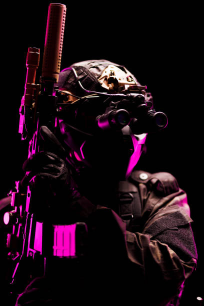

Call of Duty: Black Ops 7 is incredibly fun to play because
of the intense lobby culture. You can voice chat directly
with other players, hear them get furious when you outplay
them, and watch them rage quit mid-match. Seeing opposing
players get genuinely mad makes every victory feel much
more rewarding.

Scorestreaks
In Black Ops 7, stringing together multiple eliminations
without dying allows you to call in devastating scorestreaks.
These tactical tools can completely shift the momentum of an
online match by tracking down enemy players or clearing out
objectives. One classic, fan-favorite streak is the
remote-controlled RC-XD explosive car. Another cool thing
you can call in is a nuke, also known as a nuclear, which
you get when you get 30 kills without dying and this ends the
game and you automatically win.